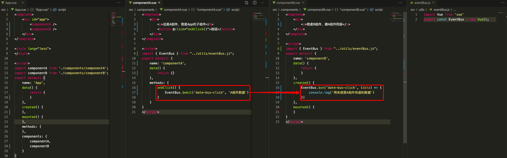

摘要
本篇文章主要介绍了vue中的几种通信方式，包括props/$emit、$refs、$parent/$children、EventBus、$attrs/$listeners、provide/inject、v-model、vue.observable、vuex等方式。
一、props/$emit 适用父子组件通信
这种方式的写法是比较常见，子组件通过props接受父组件传递的参数，同时子组件在对父组件传递过来的数据进行处理时，需要通过this.$emit('method-name', params)的方式进行处理。
二、$refs 与 $parent/$children 适用父子组件通信
$refs：我们可以通过ref这个attribute为子组件赋予一个ID引用，然后可以通过this.$refs.idname来访问子组件实例，特别注意最早可以在父组件的mounted生命周期里进行调用；（PS：如果在普通的DOM元素上使用，引用指向的就是DOM元素；）$parent/$children：我们通过this.$parent以及this.$children（数组）可以直接获取到对应的父组件和子组件（在当前页面有实际调用的组件）；（PS：根组件的this.$parent是undefined；）
分析：$children无法确定子组件的顺序，也不是响应式的；如果要访问确切的子组件建议使用$refs。
三、EventBus 适用于父子、隔代、兄弟组件通信
EventBus又称为事件总线，在Vue中可以使用EventBus来作为所有组件公共的事件中心，可以向该中心注册发送事件或接收事件，所以组件都可以上下平行地通知其他组件。
非全局事件总线
我们可以单独建一个eventBus.js文件：
1 | // eventBus.js |
然后我们在需要通信的组件中引入import { EventBus } from "eventBus.js";，然后就可以通过EventBus.$emit和EventBus.$on来发送和接受事件。

此时点击A组件的按钮，控制台会打印对应的数据；
全局事件总线
除了上述可以创建一个EventBus.js来实现中转外，我们还可以在main.js中注册一个全局的事件总线：
1 | // main.js |
我们在Vue的原型上增加了一个$EventBus属性，因此我们可以在任何的组件中访问到该参数，在需要通信的组件中直接执行this.$EventBus.$emit('method-name', params)发送事件，在需要接收事件的地方通过this.$EventBus.$on('method-name', params => {})即可对事件进行处理；
四、$attrs/$listeners 适用于隔代组件通信
$attrs
$attrs包含了父作用域中不被prop所识别（且获取）的特性绑定（class和style除外）。当一个组件没有声明任何prop时，这里会包含所有父作用域的绑定（class和style除外），并且可以通过v-bind="$attrs"传入内部组件。通常配合inheritAttrs选项一起使用。
父组件：
1 | // 父组件 |
子组件：componentA子组件中props中假如只设置了msg，在componentA组件中打印：
1 | this.$attrs // {data-name: "Tom", data-color: "red", data-title: "hello"} |
其中class和style部分会与子组件最外层的标签的class和style进行合并；
如果你不希望组件的根元素继承attribute，你可以在组件的选项中设置inheritAttrs: false。这个时候子组件的模板部分则不会有data-name、data-color、data-title；但是依然会保留class和style部分；
$listeners
$listeners包含了父作用域中的（不含.native修饰器的）v-on事件监听器。它可以通过v-on="$listeners"传入内部组件；
使用场景多用在对第三方组件进行封装时，如果组件本身具有很多的props和通过$emit触发的事件，则可以通过$attrs和$listeners轻松解决；在多级嵌套组件中也很适合，不用将props一层一层往上传递。
五、provide/inject 适用于隔代组件通信
provide和inject主要在开发高阶插件/组件库时使用。并不推荐用于普通应用程序代码中。
Vue2.2.0新增API,这对选项需要一起使用，以允许一个祖先组件向其所有子孙后代注入一个依赖，不论组件层次有多深，并在起上下游关系成立的时间里始终生效。一言而蔽之：祖先组件中通过provider来提供变量，然后在子孙组件中通过inject来注入变量。provide / inject API 主要解决了跨级组件间的通信问题，不过它的使用场景，主要是子组件获取上级组件的状态，跨级组件间建立了一种主动提供与依赖注入的关系。
需要注意的是：provide和inject绑定并不是可响应的。然而，如果你传入了一个可监听的对象，那么其对象的属性还是可响应的。例如上图中的obj变更的时候，A1组件里是可以响应式的。
六、v-model 适用于父子组件通信
v-model是一种特殊的父子组件通信方式，更多时候用来解决双向绑定的问题。
vue官方文档的表单输入绑定中提到了v-model这个语法糖，我们可以用v-model指令在表单<input>、<textarea>及<select>元素上创建双向数据绑定，其实现的原理是：一个组件上的v-model默认会利用名为value的prop和名为input的事件，父组件通过v-bind:value="msg"的方式将msg参数传递到子组件中名为value的props中，然后子组件数据变更的时候触发父组件的input事件，来修改msg的值，从而实现双向绑定；
1 | <custom-input v-model="value"></custom-input> |
一个组件上的v-model默认会利用名为value的prop和名为input的事件，但是像单选框、复选框等类型的输入控件可能会将value attribute用于不同的目的。model选项可以用来避免这样的冲突：
1 | // 父组件 |
这里的lovingVue的值将会传入这个名为checked的prop。同时当<base-checkbox>触发一个change事件并附带一个新的值的时候，这个lovingVue的property将会被更新。
v-model进阶之实现toast组件
v-model的思路实际上还是利用了props和emit来实现数据传递，因此在非input、checkbox、textarea中也同样可以实现v-model的功能；
toast组件最重要的功能在于指定时间之后关闭，为了减少通过emit方式中父组件需要增加过多的方法，我们利用双向绑定来解决这个问题：
1 | // 父组件 |
我们通过v-bind.status.sync的方式将父组件的status传递给子组件，此时展示toast；子组件监听status的变化，当status=true时，则设置一个2s的计时器，子组件通过this.$emit("update:status", false);改变status的值，此时toast关闭。
当我们用一个对象同时设置多个prop的时候，也可以将这个.sync修饰符和v-bind配合使用：
1 | <text-document v-bind.sync="doc"></text-document> |
这样会把doc对象中的每一个property(如title)都作为一个独立的prop传进去，然后各自添加用于更新的v-on监听器。
说明：.sync 修饰符是2.3.0+ 新增的，官方文档传送门
七、Vue.observable
Vue.observable是 2.6.0 新增的方法，功能是让一个对象可响应。借鉴vuex的思路，我们可以设置一个全局的store.js来管理数据。
1 | // store.js |
然后在组件中引用store.js，使用store.js中的方法进行数据处理。
1 | // index.vue |
八、vuex 适用于父子、隔代、兄弟组件通信
vuex就不再多做解释了，如官网所说，如果您不打算开发大型单页应用，使用vuex可能是繁琐冗余的。vuex实现原理参考这篇文档-vuex源码分析